Hướng Dẫn Đọc Phim XQ Bụng
A. Đại cương
– Vai trò CĐHA:
+ Đau bụng cấp có phổ nguyên nhân rộng, từ bệnh lý tự giới hạn đến tình trạng đe dọa tính mạng; cần phối hợp lâm sàng, xét nghiệm và phương tiện hình ảnh phù hợp để hạn chế bỏ sót bệnh nặng hoặc chỉ định khảo sát không cần thiết.
+ X-quang bụng có vai trò chọn lọc. Ở một số cơ sở, phương tiện này có thể được chỉ định thường xuyên nhờ tính nhanh, đơn giản và dễ tiếp cận, nhưng không phải thăm dò đầu tay cho mọi trường hợp đau bụng cấp.
+ Siêu âm, CT hoặc MRI được lựa chọn theo bệnh cảnh và câu hỏi lâm sàng; CT thường phù hợp hơn khi đau bụng cấp không khu trú hoặc nghi tắc ruột non cấp.
+ Phim X-quang bình thường không loại trừ bệnh lý bụng cấp cứu; không để kết quả âm tính làm trì hoãn khảo sát tiếp theo khi nghi ngờ lâm sàng còn cao.
– Dịch tễ: Đau bụng cấp là lý do thường gặp khiến người bệnh đến khoa cấp cứu; một số nghiên cứu ghi nhận tình trạng này chiếm khoảng 5–10% tổng lượt khám cấp cứu.
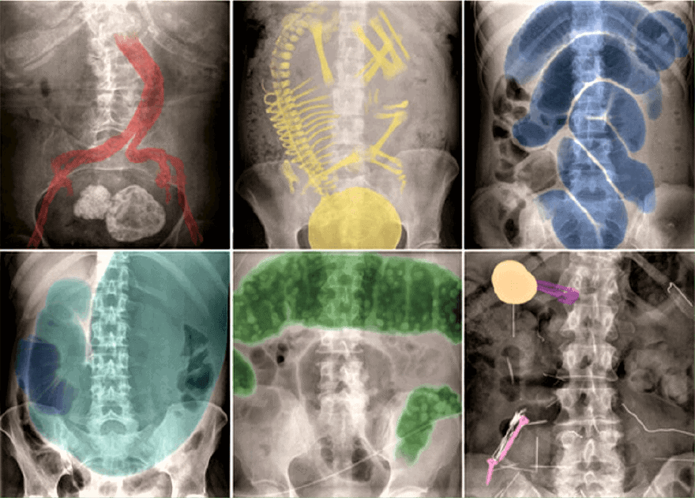
© Chẩn Đoán Hình Ảnh Xray.vn
* Chỉ định:
– Đánh giá chướng bụng, nghi tắc ruột và theo dõi diễn biến khi kết quả có thể hỗ trợ xử trí; trong nghi tắc ruột non cấp, X-quang không thay thế CT khi cần xác định nguyên nhân hoặc biến chứng.
– Phát hiện khí tự do trong phúc mạc khi nghi thủng tạng rỗng.
– Khảo sát táo bón ở trẻ em trong tình huống chọn lọc, như nghi ứ phân khi không thể khám lâm sàng hoặc kết quả khám không đáng tin cậy; không dùng thường quy để đánh giá lượng phân.
– Chẩn đoán và theo dõi viêm ruột hoại tử, đặc biệt ở trẻ sinh non.
– Khảo sát ban đầu ở trẻ sơ sinh nghi tắc nghẽn do bất thường bẩm sinh đường tiêu hóa; lựa chọn thăm dò bổ sung theo vị trí nghi ngờ.
– Đánh giá biến chứng sau phẫu thuật khi có biểu hiện lâm sàng hoặc nghi ngờ cụ thể; không chụp thường quy chỉ để theo dõi.
– Phát hiện dị vật phẫu thuật còn sót khi nghi ngờ, nhất là vật có dấu cản quang; phim âm tính không loại trừ dị vật không cản quang.
– Theo dõi sỏi đường tiết niệu đã biết có cản quang, đặc biệt sau tán sỏi; lựa chọn X-quang hoặc siêu âm tùy đặc tính sỏi.
– Xác định vị trí và theo dõi dị vật đã nuốt bằng phim chụp vùng giải phẫu phù hợp, nhất là khi dị vật cản quang; phim âm tính không loại trừ dị vật không cản quang.
– Chụp phim tổng quan trước một số thăm dò đường tiêu hóa có thuốc cản quang khi quy trình yêu cầu hoặc kết quả có thể ảnh hưởng đến kỹ thuật thực hiện; không chụp thêm thường quy trước mọi khảo sát.
– Kiểm tra vị trí và diễn biến của thiết bị y tế có thể quan sát trên X-quang.
– Đánh giá và theo dõi mức độ giãn đại tràng khi nghi ngờ hoặc đã chẩn đoán viêm đại tràng nhiễm độc.
– Đánh giá chấn thương bụng trong tình huống chọn lọc; phim bụng thường không loại trừ tổn thương tạng đặc và không thay thế siêu âm hoặc CT khi cần.
– Khảo sát khối bụng sờ thấy ở trẻ sơ sinh hoặc trẻ nhỏ; X-quang có thể gợi ý hiệu ứng choán chỗ hoặc vôi hóa, nhưng siêu âm thường cần thiết để xác định bản chất khối.
– Định vị sỏi ống tụy cản quang trước can thiệp khi phù hợp.
– Xác nhận viên nang nội soi còn lưu khi chưa ghi nhận viên nang được thải ra; dùng CT khi cần định vị chính xác hoặc đánh giá biến chứng.
– Đánh giá thời gian lưu chuyển đại tràng bằng dấu cản quang theo quy trình, chủ yếu ở người bệnh táo bón mạn tính.
* Chống chỉ định
– Không có chống chỉ định tuyệt đối; chỉ thực hiện khi có chỉ định hợp lý và tối ưu hóa liều tia trong khi vẫn bảo đảm chất lượng chẩn đoán.
– Thai kỳ hoặc có khả năng mang thai không phải chống chỉ định tuyệt đối. Ưu tiên siêu âm hoặc MRI nếu có thể trả lời câu hỏi lâm sàng; nếu X-quang cần thiết, cân nhắc lợi ích–nguy cơ, tối ưu hóa kỹ thuật và không trì hoãn khảo sát thiết yếu.
B. Kỹ thuật chụp x-quang
I. Đậm độ cản quang
– Cơ chế tạo hình ảnh: Độ cản quang biểu thị mức suy giảm tia X khi đi qua cơ thể; cấu trúc làm suy giảm tia X càng nhiều thì trên ảnh càng sáng:
+ Mức suy giảm phụ thuộc thành phần nguyên tố, mật độ, bề dày cấu trúc trên đường đi của tia và năng lượng chùm tia.
+ X-quang bụng là ảnh chiếu hai chiều; độ cản quang tại mỗi vị trí chịu ảnh hưởng tổng hợp của các cấu trúc chồng lên nhau.
– Các mức cản quang cơ bản theo thứ tự tăng dần:
+ Khí có độ cản quang thấp nhất, biểu hiện màu đen.
+ Mỡ cản quang hơn khí nhưng kém mô mềm và dịch, thường có màu xám đen.
+ Mô mềm và dịch có độ cản quang gần nhau, thường không thể phân biệt chỉ dựa vào sắc độ; cần dựa thêm vào vị trí, đường bờ và tương quan với cấu trúc lân cận.
+ Xương và vôi hóa cản quang hơn mô mềm, thường biểu hiện màu trắng; mức độ còn phụ thuộc thành phần và bề dày.
+ Kim loại và thuốc cản quang chứa bari hoặc iod thường cản quang mạnh, biểu hiện rất sáng; hình ảnh thay đổi theo thành phần, nồng độ và bề dày.
– Cạm bẫy: Trên X-quang số, xử lý ảnh có thể làm thay đổi độ sáng và độ tương phản hiển thị; không suy trực tiếp mức cản quang hoặc chất lượng ảnh chỉ từ độ sáng trên màn hình.
II. Chụp bụng không chuẩn bị
* Chụp tư thế đứng thẳng
– Tư thế:
+ Người bệnh đứng thẳng, thân mình không xoay; áp mặt sau vào detector khi chiếu trước–sau hoặc áp mặt trước vào detector khi chiếu sau–trước.
+ Dùng tia trung tâm nằm ngang; chọn trường chụp bao phủ vòm hoành khi cần tìm khí tự do, đồng thời lấy đủ vùng giải phẫu cần khảo sát.
– Mục đích:
+ Phát hiện các mức khí–dịch trong lòng ruột; các mức này có thể gặp trong tắc ruột nhưng không đặc hiệu.
+ Phát hiện khí tự do trong phúc mạc, thường thấy dưới vòm hoành khi người bệnh đứng.
– Cạm bẫy: Phim âm tính không loại trừ tắc ruột hoặc thủng tạng rỗng, đặc biệt khi lượng khí ít hoặc chụp sớm; cần đối chiếu bệnh cảnh và cân nhắc khảo sát bổ sung khi nghi ngờ còn cao.


* Chụp tư thế nằm tia X đi ngang
– Tư thế:
+ Sử dụng khi người bệnh không thể đứng; có thể chụp nằm ngửa hoặc nằm nghiêng trái với tia X đi ngang.
+ Khi tìm khí tự do trong phúc mạc, ưu tiên nằm nghiêng trái (bên trái áp xuống, bên phải hướng lên) để khí tập trung giữa gan và thành bụng bên phải; giữ tư thế đủ lâu để khí phân bố trước khi chụp.
+ Nếu không thể thay đổi tư thế, có thể chụp nằm ngửa với tia ngang; ở người bệnh đa chấn thương, bảo đảm an toàn và duy trì bất động khi cần.
– Mục đích:
+ Hỗ trợ phát hiện mức khí–dịch trong các quai ruột chứa khí và dịch.
+ Tìm khí tự do trong phúc mạc khi không thể chụp tư thế đứng.
– Cạm bẫy: Tư thế nằm ngửa có thể kém nhạy hơn tư thế nằm nghiêng trái khi lượng khí tự do ít; phim âm tính không loại trừ khí tự do hoặc tắc ruột.

III. Chụp HTN không chuẩn bị
– Định nghĩa: “Không chuẩn bị” nghĩa là không sử dụng thuốc cản quang; không đồng nghĩa với việc phải nhịn ăn hoặc chuẩn bị đại tràng.
– Kỹ thuật:
+ Người bệnh nằm ngửa, thân mình không xoay; chụp hướng trước–sau, nín thở ngắn sau thở ra nếu phối hợp được.
+ Tia trung tâm vuông góc với detector, hướng vào đường giữa; trường chụp bao gồm hai thận, đường đi của niệu quản và bàng quang đến khớp mu.
– Vai trò CĐHA:
+ Khảo sát chủ yếu các sỏi cản quang trong hệ tiết niệu và theo dõi sỏi đã biết; không đánh giá toàn diện mọi bệnh lý hệ tiết niệu.
+ Phim âm tính không loại trừ sỏi, vì một số thành phần sỏi không cản quang hoặc sỏi có thể bị che bởi hơi, phân hay cấu trúc chồng lấp.
– Chuẩn bị người bệnh:
+ Thường không cần nhịn ăn, ăn kiêng hay dùng thuốc nhuận tràng; chỉ cân nhắc chuẩn bị đại tràng theo chỉ định cụ thể khi ứ phân nhiều làm che khuất vùng cần khảo sát.
+ Loại bỏ vật cản quang bên ngoài trường chụp; khai thác việc dùng thuốc chứa bismuth và chụp khảo sát có thuốc cản quang gần đây vì chúng có thể tạo hình ảnh cản quang trong ống tiêu hóa, gây nhầm lẫn hoặc che lấp đường tiết niệu.
+ Không tự ý ngừng thuốc hoặc áp dụng thời gian chờ cố định sau khảo sát có thuốc cản quang; quyết định thời điểm chụp theo tình trạng tồn lưu chất cản quang và mức độ cấp thiết của khảo sát.


IV. Đánh giá chất lượng phim
* Giới hạn phim
– Phim bụng tư thế đứng cần lấy trọn hai vòm hoành khi mục tiêu là tìm khí tự do dưới hoành.
– Phim hệ tiết niệu không chuẩn bị cần bao gồm từ cực trên hai thận đến khớp mu, bảo đảm thấy bàng quang và toàn bộ đường đi của niệu quản.
– Hai bên phim cần lấy được bờ ngoài thành bụng; không cắt cụt vùng giải phẫu cần đánh giá.
* Cường độ tia:
– Phơi nhiễm thấp làm tăng nhiễu lượng tử và giảm khả năng nhận diện chi tiết.
– Phơi nhiễm phù hợp giúp thấy rõ các thân đốt sống thắt lưng và bờ cơ thắt lưng hai bên, đồng thời bảo đảm chi tiết chẩn đoán.
– Cạm bẫy: Trên phim tương tự, thiếu phơi nhiễm làm ảnh quá sáng, còn thừa phơi nhiễm làm ảnh quá đậm. Trên X-quang số, xử lý hậu kỳ có thể làm độ sáng hiển thị gần bình thường dù mức phơi nhiễm chưa phù hợp; vì vậy không đánh giá chỉ bằng độ sáng trên màn hình.
– Chỉ số phơi nhiễm (EI) ước tính mức bức xạ tới bộ thu nhận ảnh, không phải liều bức xạ của người bệnh; cần diễn giải theo mục tiêu của hệ thống chụp.
* Khung chậu nam – nữ:
– Khung chậu nam:
+ Khung chậu thường hẹp và cao.
+ Cánh chậu thường dốc, ít xòe; cửa trên khung chậu thường có dạng bầu dục hoặc hình tim.
+ Góc dưới mu thường hẹp, thường dưới 90°.
– Khung chậu nữ:
+ Khung chậu thường rộng và thấp.
+ Cánh chậu thường xòe; cửa trên khung chậu thường có dạng tròn hoặc bầu dục.
+ Góc dưới mu thường rộng, thường trên 90°.
– Cạm bẫy: Đây là các đặc điểm hình thái điển hình, không phải tiêu chuẩn phân định tuyệt đối; có sự chồng lấp giữa các cá thể và biến thiên theo quần thể, tuổi, cách đo và tư thế chụp. Không suy luận chỉ từ riêng góc dưới mu.
C. Giải phẫu x-quang bụng
I. Tư thế đứng

II. Tư thế nằm ngửa
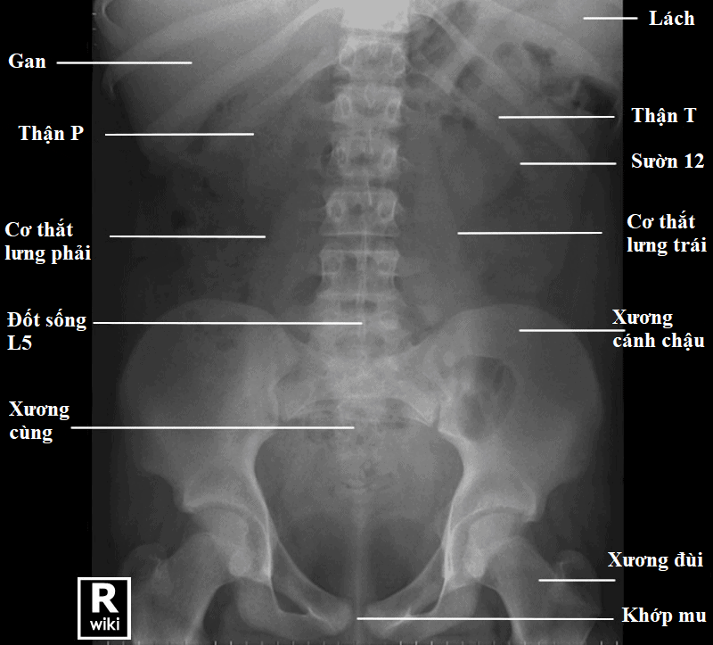
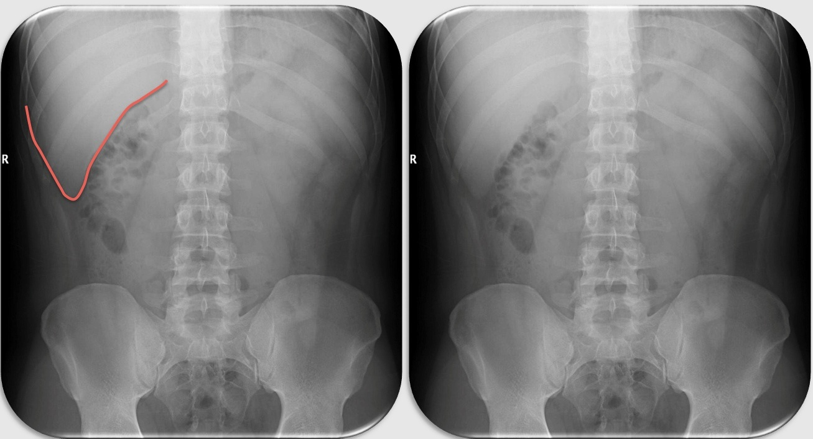
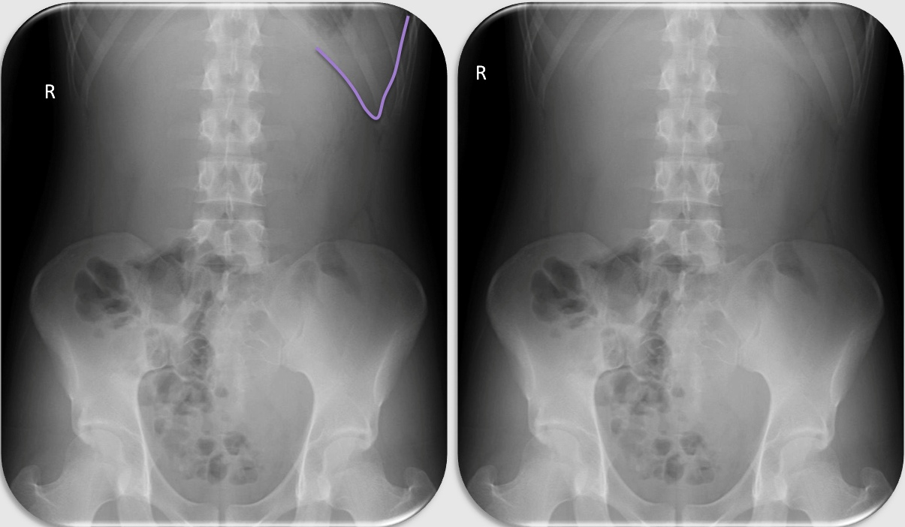
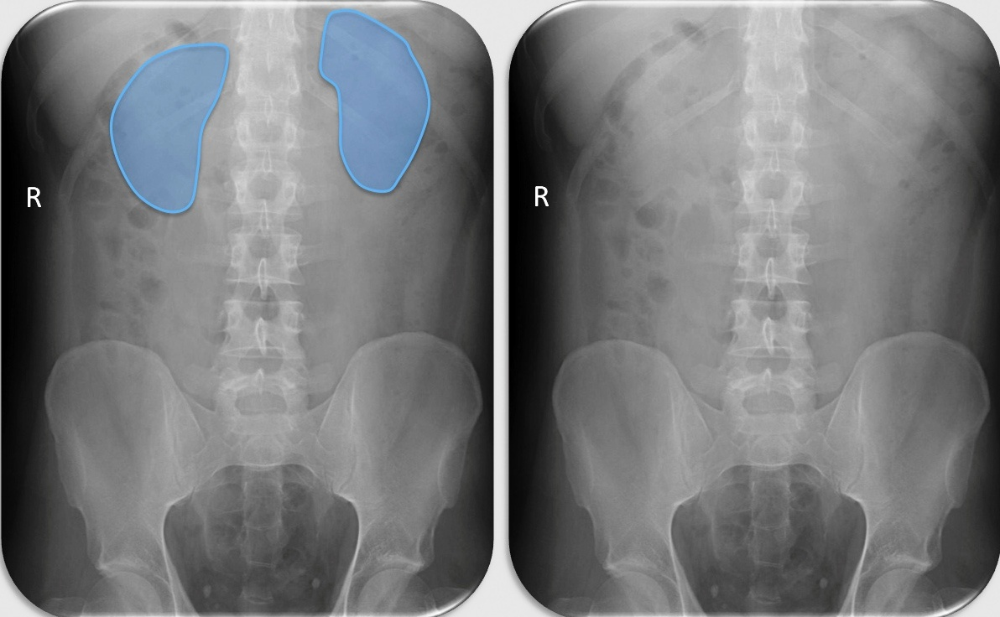
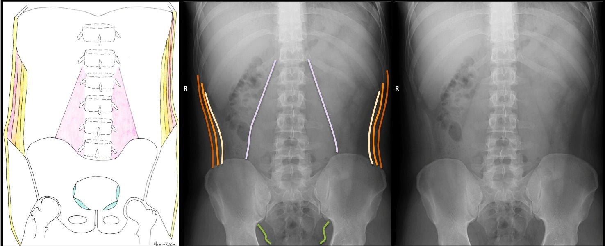
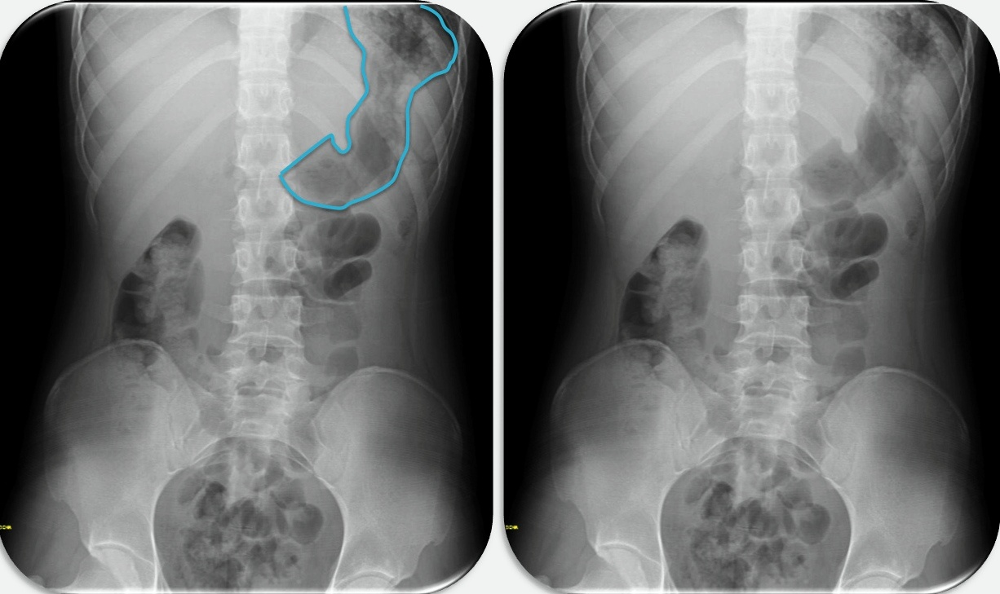

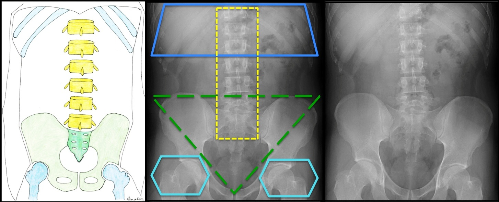
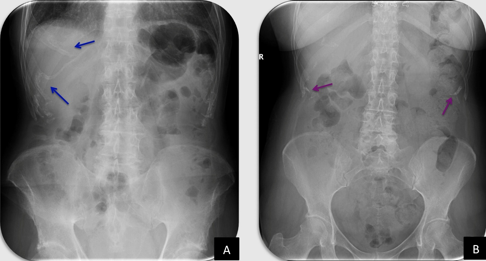
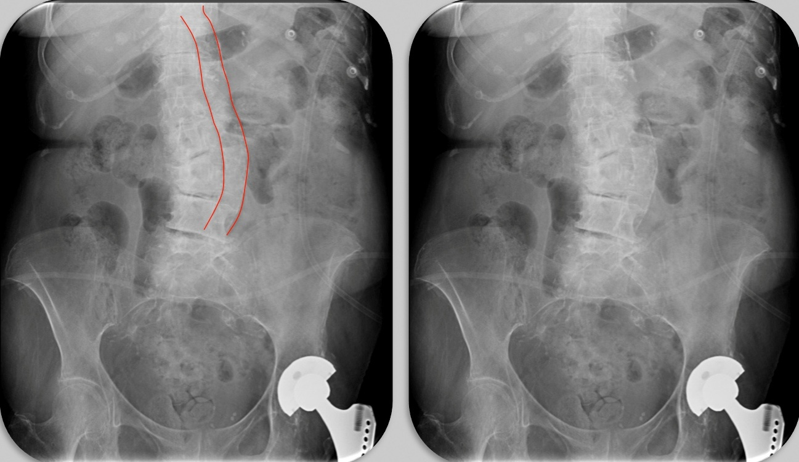
III. Tư thế nằm nghiêng
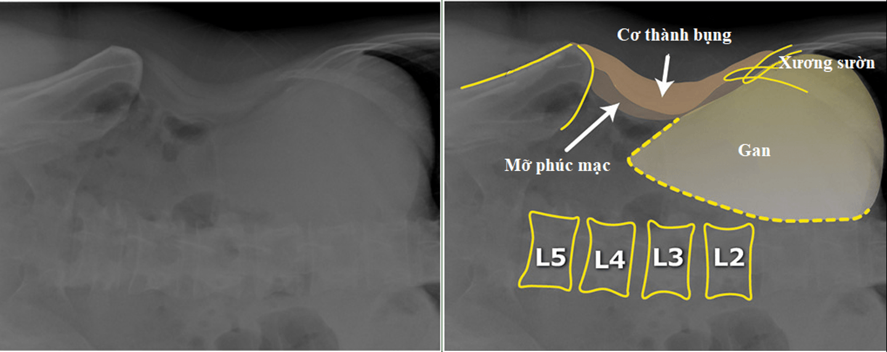
D. Tiếp cận hệ thống
– Xác định tư thế chụp:
+ Ghi nhận phim chụp nằm ngửa, đứng hay nghiêng vì tư thế ảnh hưởng đến phân bố khí và khả năng thấy mức hơi-dịch.
+ Trên phim đứng, quan sát vùng dưới hai vòm hoành để tìm khí tự do. Khi nghi thủng tạng rỗng, phim ngực đứng thường hữu ích hơn phim bụng nằm ngửa.
– Đọc phim theo một trình tự nhất quán (ABCDE):
+ A (Air – Khí): Đánh giá lượng và phân bố khí; tìm khí ngoài lòng ống tiêu hóa, khí trong thành ruột hoặc khí trong hệ tĩnh mạch cửa.
+ B (Bowel – Ruột): Xác định vị trí dạ dày, ruột non và đại tràng; đánh giá phân bố hơi, mức hơi-dịch và đường kính các quai ruột. Các mốc đường kính gợi ý giãn thường dùng là ruột non trên 3 cm, đại tràng trên 6 cm và manh tràng trên 9 cm.
+ C (Calcification – Vôi hóa): Tìm các ổ vôi hóa và đánh giá vị trí, hình dạng; cân nhắc sỏi đường tiết niệu, sỏi mật cản quang, vôi hóa mạch máu hoặc sỏi tĩnh mạch vùng chậu.
+ D (Disability – Xương và bóng mờ mô mềm, tạng đặc): Quan sát các xương thấy được, gồm xương sườn thấp, cột sống, khung chậu và đầu trên xương đùi; đồng thời đánh giá bóng mờ gan, lách, thận, bàng quang và cơ thắt lưng khi thấy rõ.
+ E (Everything else – Các cấu trúc khác): Kiểm tra đáy phổi nếu nằm trong trường chụp, thành bụng, thiết bị y tế, vật lạ và các dấu vết sau phẫu thuật.
– Khi đánh giá đường viền tạng và các hình mờ, lưu ý rằng khả năng nhìn thấy phụ thuộc vào chất lượng ảnh và các mặt phẳng mỡ; phim bụng thường không đánh giá đầy đủ nhu mô tạng đặc.
– So sánh với các phim chụp trước nếu có, ưu tiên đối chiếu những phim có tư thế và phạm vi chụp tương tự.
I. Khí vị trí bất thường
1. Khí tự do phúc mạc
* Tư thế chụp thẳng-đứng
– Khí tự do có thể tạo hình liềm thấu quang dưới một hoặc cả hai vòm hoành, với bờ cơ hoành hiện rõ. Dấu hiệu thường dễ nhận biết hơn ở bên phải, giữa gan và cơ hoành; bên trái cần phân biệt với bóng hơi dạ dày hoặc khí trong đại tràng.
– Cần phân biệt khí tự do với dấu Chilaiditi, trong đó quai đại tràng nằm xen giữa gan và cơ hoành; các nếp haustra giúp nhận diện khí vẫn nằm trong lòng ruột.
– Phim ngực thẳng đứng thường nhạy hơn phim bụng đứng khi tìm lượng khí tự do nhỏ. Nếu người bệnh có thể, duy trì tư thế ngồi hoặc đứng khoảng 10–20 phút trước khi chụp phim ngực để khí di chuyển lên dưới hoành.
– Không áp dụng ngưỡng thể tích 20–50 mL hay mốc 6–8 giờ sau thủng như tiêu chuẩn cố định. Khả năng phát hiện phụ thuộc vào lượng khí, tư thế và kỹ thuật chụp.
– X-quang âm tính không loại trừ khí tự do nếu nghi ngờ lâm sàng còn cao; cần cân nhắc phương tiện khảo sát bổ sung. Khí tự do cũng có thể xuất hiện sau phẫu thuật hoặc thủ thuật ổ bụng, nên cần đối chiếu bệnh cảnh.


– Viêm phúc mạc có thể gây liệt ruột, còn dính có thể gây tắc ruột cơ học; cả hai tình trạng đều có thể đi kèm mức hơi-dịch trong lòng các quai ruột. Dính là một nguyên nhân thường gặp của tắc ruột non.
– Khi khí tự do và dịch cùng hiện diện trong ổ phúc mạc, có thể xuất hiện mức hơi-dịch ngoài lòng ruột, gọi là tràn khí-dịch phúc mạc; cần phân biệt với mức hơi-dịch trong các quai ruột.


* Tư thế nằm tia X đi ngang
– Khi người bệnh không thể đứng, có thể chụp nằm nghiêng trái với tia X ngang; khí tự do dâng lên và tạo dải thấu quang giữa bờ gan phải và thành bụng bên phải.
– Trên phim nằm ngửa với tia X ngang, khí tự do có thể tập trung phía trước ổ bụng, tạo dải thấu quang ngay sau thành bụng trước và ngoài lòng ruột.


=> Case lâm sàng 1:


* Tư thế chụp bụng nằm ngửa
– Dấu hiệu Football Sign: Khi có tràn khí phúc mạc lượng lớn, khí tự do dồn ra phía trước và tạo vùng thấu quang lớn hình bầu dục, gợi hình quả bóng bầu dục (dấu hiệu quả bóng bầu dục; football sign). Bóng dây chằng liềm có thể hiện thành một đường mờ chạy giữa vùng khí.

– Dấu hiệu thành đôi (Rigler sign, double-wall sign): Khi khí tự do bao quanh quai ruột có hơi trong lòng, cả bờ trong và bờ ngoài của thành ruột đều hiện rõ. Bình thường thường chỉ nhận biết được bờ trong; bờ ngoài khó phân biệt với các mô mềm xung quanh.


– Dấu hiệu dây chằng liềm (falciform ligament sign): Khi tràn khí phúc mạc nhiều ở tư thế nằm ngửa, khí tự do phía trước gan làm hiện rõ dây chằng liềm thành một dải mờ dọc ở vùng bụng trên, thường hướng từ vùng rốn lên phía gan và cơ hoành.


2. Khí sau phúc mạc
– Nguyên nhân:
+ Thủng tạng rỗng có đoạn nằm sau phúc mạc, như phần lớn tá tràng (chủ yếu D2–D4), đại tràng lên, đại tràng xuống hoặc phần trực tràng ngoài phúc mạc.
+ Khí có thể xuất hiện sau phẫu thuật hoặc can thiệp hệ tiết niệu, tuyến thượng thận hay cột sống qua đường tiếp cận phía trước; cần đối chiếu với tiền sử và thời điểm can thiệp.
– Dấu hiệu X-quang:
+ Khí sau phúc mạc có thể tạo dải thấu quang quanh thận, dọc cơ thắt lưng hoặc cạnh các đoạn ruột nằm sau phúc mạc.
+ Khi nghi ngờ nhưng X-quang chưa rõ, CT giúp phát hiện và xác định phạm vi khí sau phúc mạc.


3. Khí trong túi mật
– Khí trong lòng túi mật, khí trong thành túi mật (Viêm túi mật khí thũng).
– Khí đường mật khi có rò mật – ruột.
– Hình ảnh mức nước hơi khi có tắc ruột do sỏi mật.


4. Khí đường mật
– Trên X-quang, khí trong đường mật hiện thành các dải thấu quang nhỏ, phân nhánh theo cây đường mật trong gan; có thể thấy khí cả trong các đường mật ngoài gan. Các nhánh khí trong gan thường tập trung quanh rốn gan và không lan sát bao gan do dòng mật hướng về rốn gan. Ngược lại, khí trong hệ tĩnh mạch cửa thường lan ra ngoại vi, gần bao gan.


5. Khí tĩnh mạch cửa
– Căn nguyên: Thiếu máu hoặc hoại tử ruột là căn nguyên quan trọng cần nghĩ tới, nhưng khí tĩnh mạch cửa là dấu hiệu không đặc hiệu và có thể gặp trong nhiều bệnh cảnh.
– Hình ảnh:
+ Khí tạo các dải thấu quang phân nhánh theo hệ tĩnh mạch cửa. Trong gan, các nhánh khí thường lan ra ngoại vi, gần bao gan.
+ Khi lượng khí nhiều, khí cũng có thể thấy ở thân tĩnh mạch cửa, tĩnh mạch lách hoặc các tĩnh mạch mạc treo.
– Tổn thương phối hợp có thể gồm tắc ruột, khí trong hệ tĩnh mạch mạc treo và khí trong thành ruột (pneumatosis intestinalis); khi xuất hiện đồng thời, cần đánh giá khả năng thiếu máu hoặc hoại tử ruột.


6. Khí trong ổ apxe
* Apxe gan
– Bóng gan có thể tăng kích thước.
– Vòm hoành phải có thể bị đẩy cao.
– Có thể thấy bóng khí hoặc mức khí-dịch khu trú trong ổ áp xe, nhất là khi ổ áp xe sinh khí. Cần phân biệt với khí tự do dưới hoành và khí đường mật, vốn có hình thái và vị trí khác.
– Có thể kèm tràn dịch màng phổi phải hoặc xẹp phổi dạng dải ở đáy phổi phải do phản ứng viêm. Nếu ổ áp xe vỡ xuyên cơ hoành vào khoang màng phổi, có thể gây tràn mủ màng phổi.

* Viêm thận bể thận
– Có thể thấy sỏi cản quang ở niệu quản hoặc hệ thống đài-bể thận gây tắc nghẽn.
– Khí chỉ trong hệ thống đài-bể thận gợi ý viêm bể thận sinh hơi (emphysematous pyelitis); khí trong nhu mô thận, có thể lan vào mô quanh thận, gợi ý viêm thận bể thận sinh hơi (emphysematous pyelonephritis).
=> Case lâm sàng 1:
* Apxe dưới hoành
– Là ổ mủ khu trú giữa cơ hoành và các tạng trong ổ bụng.
– Thường xuất hiện sau phẫu thuật ổ bụng hoặc do nhiễm trùng, thủng tạng; các nguyên nhân khác gồm viêm tụy, viêm túi mật, áp xe gan và chấn thương. Đôi khi không xác định được nguyên nhân.
– Ổ áp xe có thể nằm ở khoang dưới hoành phải, thường gặp hơn, hoặc bên trái, quanh lách và dạ dày.
– Trên X-quang, có thể thấy đám mờ khu trú dưới vòm hoành, đôi khi có bóng khí hoặc mức khí-dịch. Vòm hoành cùng bên có thể nâng cao, kèm tràn dịch màng phổi hoặc xẹp phổi dạng dải ở đáy phổi.


=> Case lâm sàng 1:


=> Case lâm sàng 2:


7. Khí trong bàng quang
– Viêm bàng quang sinh hơi (emphysematous cystitis) thường gặp ở người bệnh đái tháo đường; các yếu tố thuận lợi khác gồm suy giảm miễn dịch, bàng quang thần kinh và tắc nghẽn đường ra bàng quang.
– Trên X-quang, có thể thấy khí trong thành bàng quang, thường tạo các dải thấu quang viền theo thành, kèm hoặc không kèm khí trong lòng.
– Đặt sonde bàng quang kéo dài vừa là yếu tố thuận lợi cho nhiễm trùng, vừa có thể đưa khí vào lòng bàng quang.
=> Case lâm sàng 1:
II. Ống tiêu hóa
Khí trong lòng ống tiêu hóa chủ yếu do nuốt khí; một phần khí ruột còn được tạo ra bởi hoạt động của vi khuẩn. Bóng khí dạ dày thường thấy; ở tư thế đứng có thể thấy mức khí-dịch, thay đổi theo tư thế và từng người. Bình thường, khí ruột non thường ít, có thể thấy các bóng khí nhỏ trong một vài quai (thường khoảng 3–4), chủ yếu ở vùng trung tâm ổ bụng và khuôn theo lòng ruột. Lượng khí có thể tăng sau khi uống đồ uống có ga hoặc do nuốt khí kéo dài.
1. Tắc ruột cơ học
* Dấu hiệu tắc ruột
– Phim bụng thẳng có thể chưa thấy bất thường trong giai đoạn sớm hoặc khi tắc ruột non đoạn cao, đặc biệt ở tá tràng. Nếu nghi ngờ lâm sàng vẫn cao, nên chụp CT bụng-chậu.
– Đoạn ruột phía trên chỗ tắc giãn, trong khi đoạn phía dưới thường xẹp hoặc ít hơi. Thời điểm và mức độ giãn thay đổi theo vị trí, mức độ và thời gian tắc. Ở người lớn, đường kính ruột non > 3 cm, đại tràng > 6 cm hoặc manh tràng > 9 cm gợi ý giãn.
– Trên phim bụng tư thế đứng hoặc nằm nghiêng trái với tia X ngang, có thể thấy các mức hơi-dịch trong các quai ruột giãn. Thời điểm xuất hiện thay đổi theo vị trí, mức độ tắc và lượng hơi-dịch.
=> Case lâm sàng 1:
* Xác định vị trí tắc
* Tắc ruột non
+ Các quai ruột giãn thường nằm ở trung tâm ổ bụng.
+ Các nếp niêm mạc mảnh, sít nhau và chạy ngang toàn bộ lòng ruột.
+ Đường kính ruột non > 3 cm gợi ý giãn.
+ Thường có nhiều mức hơi-dịch; các mức ở những độ cao khác nhau có thể tạo hình bậc thang.
+ Phân khuôn thường nằm trong đại tràng; không dùng sự hiện diện hay vắng mặt của phân làm dấu hiệu định vị độc lập.
+ Tắc ruột non đoạn xa có thể làm giãn nhiều quai và tạo nhiều mức hơi-dịch, nhưng vị trí các quai không cố định theo một hướng từ hố chậu phải đến mạn sườn trái.
– Tắc đại tràng:
+ Các quai đại tràng giãn thường nằm ở ngoại vi; đại tràng ngang và đại tràng sigma có thể di động nên vị trí có thể thay đổi.
+ Các nếp bán nguyệt đại tràng thưa, chỉ lấn một phần lòng ruột và không chạy ngang hết khẩu kính.
+ Đường kính đại tràng > 6 cm hoặc manh tràng > 9 cm gợi ý giãn.
+ Mức hơi-dịch thường ít hơn và có thể dài hơn so với tắc ruột non.
+ Có thể thấy phân khuôn trong đại tràng, thường ở đoạn phía trên chỗ tắc.
+ Ruột non có giãn hay không tùy van hồi-manh tràng còn kín hay không: nếu van còn kín, ruột non thường không giãn; nếu van không kín, khí và dịch có thể trào ngược, làm giãn cả ruột non.
* Trường hợp tắc ruột đặc biệt
– Tắc ruột do sỏi mật (gallstone ileus): Sỏi di chuyển qua rò mật–ruột và thường mắc ở đoạn cuối hồi tràng hoặc vùng van hồi-manh tràng; đối chiếu với bộ ba Rigler đã nêu ở mục “Khí trong túi mật”.
– Xoắn đại tràng sigma:
+ Quai đại tràng sigma giãn lớn, thường xuất phát từ tiểu khung và vươn lên ổ bụng. Dấu hiệu “hướng bắc” (Northern Exposure sign) là khi đỉnh quai giãn vượt lên trên mức đại tràng ngang.
+ Đại tràng sigma bình thường chủ yếu nằm trong tiểu khung, nhưng vị trí có thể thay đổi.
+ Dấu hiệu “hạt cà phê”: là hình dáng đại tràng sigma dãn giống hình hạt cà phê. Khi đại tràng sigma bị tắc dạng quai kín, hơi trong đại tràng gây ép thành hai quai ruột tạo dạng khe nứt như hạt cà phê, trong lúc thành bên của quai ruột giãn tạo thành bờ hạt cà phê. Xoắn ở đại tràng sigma có thể chiếm chỗ vùng chậu và có thể toàn bộ ổ bụng. Đỉnh của nó thường vượt qua đốt sống T10 và nằm bên trái hoặc phải đường giữa.
– Dấu hiệu hạt cà phê (coffee bean sign):
+ Quai đại tràng sigma giãn lớn, gập thành hai nhánh chứa khí; hai thành trong áp sát nhau tạo dải mờ ở giữa, còn bờ ngoài của quai giãn tạo hình bầu dục giống hạt cà phê.
+ Quai giãn có thể vươn từ tiểu khung lên bụng trên và chiếm phần lớn ổ bụng; đỉnh có thể lệch sang hai bên đường giữa.
– Xoắn manh tràng:
+ Manh tràng giãn chứa hơi, đường kính > 9 cm, thường nằm lạc chỗ ở vùng bụng trên trái hoặc bụng giữa. Tuy nhiên, manh tràng có thể nằm ở bất kỳ vị trí nào trong ổ bụng.
+ Hố chậu phải có thể rỗng, không còn thấy bóng manh tràng ở vị trí bình thường do manh tràng di lệch.
2. Tắc ruột cơ năng
– Thường thấy giãn lan tỏa ruột non và đại tràng, có thể có hơi đến trực tràng và không xác định được điểm chuyển tiếp rõ.
– Khác với tắc cơ học, thường giãn các quai ruột phía trên chỗ tắc, còn đoạn phía dưới ít hơi hoặc xẹp; tuy nhiên, kiểu phân bố này không phải lúc nào cũng điển hình.
– Có thể thấy các mức hơi-dịch. Trong tắc cơ năng, các mức trong cùng quai ruột đôi khi nằm ở độ cao tương tự; trong tắc cơ học, chúng có thể ở các độ cao khác nhau. Đây chỉ là dấu hiệu gợi ý, có giá trị phân biệt hạn chế.
3. Liệt ruột khu trú
– Có thể thấy giãn khu trú một hoặc vài quai ruột do giảm nhu động phản xạ ở vùng lân cận ổ viêm; đôi khi có mức hơi-dịch.
– Quai ruột giãn khu trú này được gọi là quai ruột canh gác (sentinel loop), gợi ý quá trình viêm cấp lân cận nhưng không đặc hiệu.
– Vị trí quai giãn có thể gợi ý căn nguyên: viêm tụy cấp thường liên quan quai hỗng tràng; viêm túi mật có thể gây giãn khu trú quai ruột vùng hạ sườn phải, đôi khi ở đại tràng góc gan; viêm ruột thừa có thể gây giãn khu trú đoạn cuối hồi tràng.
– Trong viêm tụy cấp, có thể gặp thêm dấu cắt cụt đại tràng ở góc lách; đây là dấu hiệu riêng, không đồng nhất với quai ruột canh gác.
=> Case lâm sàng 1: viêm tụy hoại tử
4. Hẹp môn vị
– Dạ dày giãn lớn, bờ dưới có thể sa thấp xuống hạ vị; nhu động có thể giảm.
– Trên phim chụp dạ dày cản quang tư thế đứng, có thể thấy ba lớp trong dạ dày: baryt lắng ở dưới, dịch ứ ở giữa và túi hơi ở trên.
– Baryt chậm qua môn vị và còn đọng nhiều trong dạ dày sau thời gian theo dõi gợi ý chậm tháo rỗng.

=> Case lâm sàng 1:


5. Chilaiditi
– Dấu hiệu Chilaiditi là tình trạng một đoạn ruột, thường là đại tràng ngang hoặc đại tràng phải, nằm xen giữa gan và vòm hoành phải. Khi có triệu chứng liên quan như đau bụng hoặc chướng bụng, gọi là hội chứng Chilaiditi.
– Trên phim X-quang, thấy hơi trong lòng ruột nằm giữa gan và vòm hoành phải; các nếp bán nguyệt và sự liên tục với đại tràng giúp nhận biết nguồn gốc trong lòng ruột.

=> Case lâm sàng 1:


III. Vôi hóa
– Vôi hóa bệnh lý có thể gặp trong:
+ Sỏi mật cản quang; sỏi tiết niệu và vôi hóa nhu mô thận.
+ Vôi hóa thận hoặc tuyến thượng thận.
+ Vôi hóa tụy.
+ Vôi hóa u xơ tử cung.
+ Vôi hóa thành mạch, đặc biệt thành động mạch chủ; vôi hóa dạng viền có thể gợi phình động mạch.

=> Case lâm sàng 1: u quái buồng trứng
=> Case lâm sàng 2: sỏi ruột thừa
– Vôi hóa thường gặp, thường lành tính:
+ Vôi hóa sụn sườn.
+ Sỏi tĩnh mạch vùng chậu.
+ Vôi hóa hạch do viêm hoặc nhiễm trùng cũ.
+ Vôi hóa tuyến tiền liệt, thường lành tính.
– Thai trong ổ bụng
IV. Xương & Tạng đặc
– Xương: Đánh giá cột sống thắt lưng, xương sườn thấp, khung chậu và phần xương đùi thấy được; tìm gãy xương, tổn thương tiêu xương hoặc đặc xương và biến đổi thoái hóa.
– Tạng đặc: Đánh giá kích thước, hình dạng và bờ bóng gan, lách, thận, bàng quang nếu quan sát được; tạng to hoặc khối choán chỗ có thể làm biến dạng bóng mô mềm hay đẩy lệch các quai ruột.
– Tìm các bóng mờ mô mềm ở vị trí bất thường, có thể gợi ý khối choán chỗ hoặc di lệch tạng.
=> Case lâm sàng 1: u Wilms
=> Case lâm sàng 2: RCC thận trái
=> Case lâm sàng 3: vỡ phình ĐM chủ


– Tổn thương xương chậu: Tìm dấu gãy xương, tiêu xương hoặc đặc xương.
– Tổn thương cột sống: Đánh giá gù, vẹo; cùng hóa đốt sống thắt lưng; gai đôi; trượt đốt sống; xẹp đốt sống; dấu hiệu viêm cột sống dính khớp; tiêu cuống sống; và các vùng tiêu xương hoặc đặc xương.
V. Tổn thương khác
– Dị vật cản quang có thể nằm trong lòng ống tiêu hóa hoặc trong ổ phúc mạc; đánh giá vị trí, hình dạng và số lượng.
– Dụng cụ y khoa: Có thể thấy clip phẫu thuật, stent, ống dẫn lưu và dụng cụ tử cung (vòng tránh thai); đánh giá vị trí và hình dạng.
– Đáy phổi hai bên và vòm hoành: Trên phim bụng tư thế đứng, cần khảo sát phần đáy phổi, màng phổi và vòm hoành nằm trong trường chụp.
+ Tìm đám mờ hoặc khối ở đáy phổi, có thể do u nguyên phát hoặc di căn; lưu ý thêm đông đặc và xẹp phổi.
+ Đánh giá bệnh lý màng phổi như tràn dịch, tràn khí hoặc vôi hóa màng phổi.
+ Quan sát vòm hoành nâng cao hoặc dẹt; vòm hoành dẹt có thể gặp trong tăng thông khí phổi, còn thoát vị hoành có thể đưa tạng bụng lên lồng ngực.


Tài liệu tham khảo
* Abdominal X-rays for Medical Students – Christopher Clarke, Anthony Dux
* Abdominal x-ray review: ABDOX – Dr Ammar Haouimi
* The Abdominal Radiograph – Barry James and Barry Kelly
* Interpretation of the Pediatric Abdominal Radiograph – a basic skill or a “lost art”? – Richard I. Markowitz
* Abdominal X-ray – Annelies van der Plas, MSK radiologist Maastricht UMC+
* Kỹ thuật chụp x quang – Phạm Minh Thông
* American College of Radiology (ACR) and the Society for Pediatric Radiology (SPR) (2016). ACR – SPR Practice parameter for the performance of abdominal radiology 2016
* International Atomic Energy Agency (IAEA, 2014). Radiation Protection and Safety of Radiation Sources: International Basic Safety Standards (General Safety Requirements Part 3) 2014
* Plain abdominal radiography in acute abdominal pain; past, present, and future – Sarah L Gans, Jaap Stoker and Marja A Boermeester
* Basic Approach to Reading a Radiograph in the Neonate – Mary Whalen
* Analysis of abdominal X-ray: A simple technique but full of information – P. Servent Sáenz; Majadahonda/ES
* Abdominal x-ray: “paleontoradiology” or back to the future? – I. GALÁN GONZALEZ, A. Verón Sánchez, C. Idoate Ortueta, J. M. MUÑOZ OLMEDO; Madrid/ES
* Abdominal X-ray Signs: all that a radiologist should remember – J. C. Ruivo Rodrigues, B. Rodrigues, C. F. R. C. Ribeiro
* A Systematic Approach to Reporting an Abdominal Radiograph – S. Arrigo, S. P. D. Vella, R. Gatt
* Abdominal X-ray Interpretation – Daniel Ward and Dr Lewis Potter
* Abdominal radiopacities on plain abdominal radiograph – P. T. R. Marques, A. S. C. C. Germano, P. Joao
* Misleading abdominal calcifications on plain film with CT correlation: A series of challenging cases – . F. Santoscoy Gutierrez, A. O. Quiroz-Casian, M. Santoscoy
* Abdominal radiograph pearls and pitfalls for the emergency department radiologist: a pictorial review – Jerry T. Loo, Vinay Duddalwar, Frank K